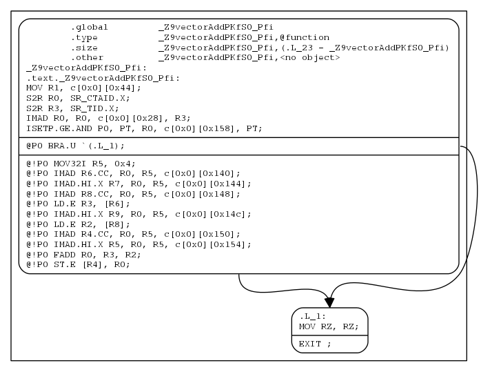

icuda
hands-on introduction to CUDA programming
hands-on introduction to CUDA programming
This is a hands-on seminar series on pragmatic CUDA programming. It emphasizes samples, libraries and tools. This seminar series consists of 3 seminars.
Seminar 1: This seminar gives a high-level overview of GPU hardware and CUDA programming philosophy. It covers four samples including vectorAdd, zeroCopy, bandwidthTest and checkError, and two tools including nvcc and cuda-gdb.
Seminar 2: This seminar illustrates how to exploit single-device parallelism and GPU-specific hardware components. It covers four samples including matrixMul, atomicAdd, asyncEngine and hyperQ, and three tools including nvprof, nsight and CUDA_Occupancy_Calculator.xls.
Seminar 3: This seminar illustrates how to exploit multi-device parallelism and how to utilize libraries. It covers six samples including deviceQuery, multiDevice, openmp, mpi, cublas and thrust, and four tools including nvidia-smi, cuda-memcheck, cuobjdump & nvdisasm.
Seminar 1: 08 Nov 2013, 2:00pm - 4:00pm, SHB 123
Seminar 2: 14 Nov 2013, 2:00pm - 4:00pm, SHB 123
Seminar 3: 21 Nov 2013, 2:00pm - 4:00pm, SHB 123
GPGPU System ACCOUNT REQUEST FORM
All the samples are free and open source under Apache License 2.0. They are available at https://github.com/HongjianLi/cudart.
hjli@hpc1:~> git clone https://github.com/HongjianLi/cudart.git
All the samples use the CUDA Runtime API.
A sample Makefile looks like this. Instead of gcc, it uses nvcc as CUDA compiler. The option -arch specifies the name of the class of nVidia GPU architectures for which the cuda input files must be compiled. Our K20m GPU architecture is sm_35. Refer to Inside the Kepler Tesla K20 Family for more detail.
This sample adds two vectors of floats.
Try different values of numElements and numThreadsPerBlock.
This sample maps device pointers to pinned host memory so that kernels can directly read from and write to pinned host memory.
On integrated systems where device memory and host memory are physically the same, the mapping mechanism saves superfluous copies from host to device and from device to host.
On discrete systems where device memory and host memory are physically different, the mapping mechanism saves explicit copies from host to device and from device to host.
Try passing the flag cudaDeviceScheduleAuto to cudaSetDeviceFlags.
Try passing the flag cudaHostAllocDefault to cudaHostAlloc to allocate the memory as non-mapped.
This sample measures host-to-device and device-to-host bandwidth via PCIe for pageable and pinned memory of four transfer sizes of 3KB, 15KB, 15MB and 100MB, and outputs them in CSV format.
Try different values of sizes.
Try cudaMemcpy instead of cudaMemcpyAsync on pinned memory.
Try cudaHostRegister to register an existing host memory range as pinned memory, and cudaHostUnregister to unregister it after use.
Try passing the flag cudaHostAllocWriteCombined to cudaHostAlloc to allocate the memory as write-combined (WC).
This sample checks the return value of every runtime API. It requires -I /usr/local/cuda/samples/common/inc in the Makefile.
Try setting numElements to 1e+10, and observe cudaErrorMemoryAllocation.
Try setting numThreadsPerBlock to 2560, and observe cudaErrorInvalidConfiguration.
Try accessing a[i*2] in the kernel, and observe cudaErrorLaunchFailure. Note the error line number at line 26 because kernel execution is asynchronous.
The checkCudaErrors macro, as listed below, is defined in /usr/local/cuda/samples/common/inc/helper_cuda.h. In case a CUDA host call returns an error, it will output the proper CUDA error string to stderr, calls cudaDeviceReset to destroy all allocations and reset all state on the current device in the current process, and exits the program. Try to define your own checkCudaErrors macro for your particular applications.
This sample uses shared memory to accelerate matrix multiplication.
Try using double instead of float.
Try using cudaDeviceSetCacheConfig or cudaFuncSetCacheConfig to set the sizes of L1 cache and shared memory out of 64KB.
Try using cudaDeviceSetSharedMemConfig or cudaFuncSetSharedMemConfig to set shared memory bank width to be eight bytes natively.
Try using dynamic shared memory which can have a dynamic size at run time.
Try using cudaMallocPitch to allocate a 2D array and cudaMemcpy2D to copy a 2D array.
Try using memory fence functions instead of synchronization functions.
Try rewriting the previous bandwidthTest sample using cudaEventRecord and cudaEventElapsedTime instead of shrDeltaT.
This sample uses atomic functions, assertions and printf.
Here are four possible output.
blockIdx.x = 0, sum = 1 blockIdx.x = 1, sum = 4 sum = 13
blockIdx.x = 1, sum = 1 blockIdx.x = 0, sum = 4 sum = 13
blockIdx.x = 0, sum = 4 blockIdx.x = 1, sum = 1 sum = 13
blockIdx.x = 1, sum = 1 blockIdx.x = 0, sum = 7 sum = 13
Try different numbers of threads per block and different numbers of blocks per grid.
Try atomic functions on shared memory, and compare the performance to atomic functions on global memory.
Refer to Understanding and Using Atomic Memory Operations for more detail.
This sample uses asynchronous engines to overlap data transfer and kernel execution.
This sample uses multiple streams to overlap multiple kernel execution, known as the HyperQ technology.
Try different values of numMilliseconds, numKernels and numStreams.
Try different numbers of threads per block, different numbers of blocks per grid, and different sizes of dynamic shared memory.
Try double buffering.
This sample enumerates some properties of the CUDA devices present in the system.
Try enumerating all the properties returned by cudaGetDeviceProperties of all the devices.
This sample uses cudaSetDevice within a single thread to utilize multiple GPUs.
Try using valgrind to detect memory leak in the following 3 cases of cleanup.
hjli@hpc1:~/cudart/multiDevice> valgrind ./multiDevice
Case 1: cudaDeviceReset is called on every device.
for (int i = 0; i < numDevices; ++i)
{
cudaSetDevice(i);
cudaDeviceReset();
}
==53804== HEAP SUMMARY: ==53804== in use at exit: 343,139 bytes in 119 blocks ==53804== total heap usage: 21,298 allocs, 21,179 frees, 15,813,174 bytes allocated ==53804== ==53804== LEAK SUMMARY: ==53804== definitely lost: 0 bytes in 0 blocks ==53804== indirectly lost: 0 bytes in 0 blocks ==53804== possibly lost: 2,992 bytes in 22 blocks ==53804== still reachable: 340,147 bytes in 97 blocks ==53804== suppressed: 0 bytes in 0 blocks
Case 2: cudaDeviceReset is called on one device.
// for (int i = 0; i < numDevices; ++i)
// {
// cudaSetDevice(i);
cudaDeviceReset();
// }
==53860== HEAP SUMMARY: ==53860== in use at exit: 7,031,081 bytes in 11,771 blocks ==53860== total heap usage: 21,282 allocs, 9,511 frees, 15,812,934 bytes allocated ==53860== ==53860== LEAK SUMMARY: ==53860== definitely lost: 0 bytes in 0 blocks ==53860== indirectly lost: 0 bytes in 0 blocks ==53860== possibly lost: 51,984 bytes in 380 blocks ==53860== still reachable: 6,979,097 bytes in 11,391 blocks ==53860== suppressed: 0 bytes in 0 blocks
Case 3: cudaDeviceReset is not called at all.
// for (int i = 0; i < numDevices; ++i)
// {
// cudaSetDevice(i);
// cudaDeviceReset();
// }
==53911== HEAP SUMMARY: ==53911== in use at exit: 10,393,620 bytes in 17,742 blocks ==53911== total heap usage: 21,274 allocs, 3,532 frees, 15,812,814 bytes allocated ==53911== ==53911== LEAK SUMMARY: ==53911== definitely lost: 0 bytes in 0 blocks ==53911== indirectly lost: 0 bytes in 0 blocks ==53911== possibly lost: 78,656 bytes in 575 blocks ==53911== still reachable: 10,314,964 bytes in 17,167 blocks ==53911== suppressed: 0 bytes in 0 blocks
Refer to Multi-GPU Programming for more detail.
This sample uses OpenMP to create multiple CPU threads to utilize multiple GPUs.
In the Makefile, pass the compiler option -Xcompiler -fopenmp to nvcc in both compilation and linking.
Try omp_set_num_threads(numDevices*2); to create twice as many CPU threads as there are CUDA devices. In this case two threads will be allocating resources and launching kernels on the same device.
Refer to OpenACC 2.0 vs OpenMP 4.0 Programming Comparison for more detail.
This sample uses MPI to create multiple CPU processes to utilize multiple GPUs.
In the Makefile, pass the compiler option -I /opt/mvapich2-2.0b/include to nvcc in compilation and -L /opt/mvapich2-2.0b/lib -lmpich to nvcc in linking.
Specify the hosts to use in a host file.
hjli@hpc1:~/cudart/mpi> cat hosts
Run the executable with mpirun_rsh. Specify the host file and the number of processes to run with the option -n.
hjli@hpc1:~/cudart/mpi> mpirun_rsh -hostfile hosts -n 4 ./mpi
Try using float instead of int.
Try writing a reduce kernel to compute the sum of the current node.
Refer to Introduction to CUDA-aware MPI and NVIDIA GPUDirect, GPUDirect RDMA and Green Multi-GPU Architectures, MVAPICH2: A High Performance MPI Library for NVIDIA GPU Clusters with InfiniBand and Accelerating High Performance Computing with GPUDirect RDMA for more detail.
This sample uses CUBLAS, a CUDA implementation of BLAS (Basic Linear Algebra Subprograms), for matrix multiplication.
CUFFT is a CUDA implementation of FFT (Fast Fourier Transform).
CURAND is a CUDA implementation of PRNG (PseudoRandom Number Generator) and QRNG (QuasiRandom Number Generator).
CUSPARSE is a CUDA implementation of basic linear algebra subroutines for sparse matrices.
MAGMA is a third-party CUDA implementation of next generation LA (Linear Algebra) by the team that developed LAPACK and ScaLAPACK.
PARALUTION is a third-party CUDA implementation of sparse iterative methods.
ViennaCL is a free open-source linear algebra library for computations on many-core architectures (GPUs, MIC) and multi-core CPUs.
More GPU-accelerated libraries can be found at https://developer.nvidia.com/gpu-accelerated-libraries.
Refer to CUDA Accelerated Compute Libraries and CUDA 5 Math Library Performance Overview for more detail.
This sample uses thrust, a CUDA implementation of STL (Standard Template Library), for vector reduction.
ArrayFire is a fast software library for GPU computing with an easy-to-use API. Refer to ArrayFire: A Productive GPU Software Library for Defense and Intelligence Applications for more detail.
VexCL is a vector expression template library for OpenCL/CUDA.
Boost.Compute is a GPU/parallel-computing library for C++ based on OpenCL.
This figure shows the internal structure of the various CUDA compilation phases. It is reprinted from http://docs.nvidia.com/cuda/cuda-compiler-driver-nvcc/graphics/cuda-compilation-from-cu-to-cu-cpp-ii.png.

The cudafe++ front end preprocessor will be called multiple times.
hjli@hpc1:~> echo "int main() { int dummy; }" > test.cu
hjli@hpc1:~> nvcc -arch=sm_35 test.cu
test.cu(1): warning: variable "dummy" was declared but never referenced
test.cu(1): warning: variable "dummy" was declared but never referenced
The -ptx option generates ptx. The -cubin option generates cubin. The -fatbin option generates fatbin.
hjli@hpc1:~/cudart/vectorAdd> nvcc -arch=sm_35 -ptx vectorAdd.cu hjli@hpc1:~/cudart/vectorAdd> nvcc -arch=sm_35 -cubin vectorAdd.ptx hjli@hpc1:~/cudart/vectorAdd> nvcc -arch=sm_35 -fatbin vectorAdd.cubin hjli@hpc1:~/cudart/vectorAdd> ls -l vectorAdd.* -rw-rw-r--. 1 hjli hjli 1893 Oct 18 03:17 vectorAdd.ptx -rw-rw-r--. 1 hjli hjli 1868 Oct 18 03:18 vectorAdd.cubin -rw-rw-r--. 1 hjli hjli 2680 Oct 18 03:20 vectorAdd.fatbin
ptxas assemblies ptx into object. The option -v prints code generation statistics.
hjli@hpc1:~/cudart/vectorAdd> ptxas -arch=sm_35 -v vectorAdd.ptx
ptxas info : 0 bytes gmem
ptxas info : Compiling entry function '_Z9vectorAddPKfS0_Pfi' for 'sm_35'
ptxas info : Function properties for _Z9vectorAddPKfS0_Pfi
0 bytes stack frame, 0 bytes spill stores, 0 bytes spill loads
ptxas info : Used 10 registers, 348 bytes cmem[0]
The CUDA Driver API can JIT (Just-In-Time) compile ptx for forward compatibility. It is much analogue to OpenCL. Refer to https://github.com/HongjianLi/cuda and https://github.com/HongjianLi/opencl for samples.
hjli@hpc1:~> git clone https://github.com/HongjianLi/cuda.git hjli@hpc1:~> git clone https://github.com/HongjianLi/opencl.git
Refer to Introduction to the CUDA Toolkit as an Application Build Tool and GPU Object Linking: Usage and Benefits for more detail.
Compile an application with the options -g and -G. They embed debug information for the host code and the device code, respectively.
hjli@hpc1:~/cudart/vectorAdd> nvcc -arch=sm_35 -g -G vectorAdd.cu hjli@hpc1:~/cudart/vectorAdd> cuda-gdb ./vectorAdd
Remote debugging is also possible.
hjli@hpc1:~/cudart/vectorAdd> cuda-gdbserver :3001 ./vectorAdd Process ./vectorAdd created; pid = 48918 Listening on port 3001
hjli@pc90124:~/cudart/vectorAdd> cuda-gdb ./vectorAdd NVIDIA (R) CUDA Debugger 5.5 release Portions Copyright (C) 2007-2013 NVIDIA Corporation GNU gdb (GDB) 7.2 Copyright (C) 2010 Free Software Foundation, Inc. License GPLv3+: GNU GPL version 3 or later <http://gnu.org/licenses/gpl.html> This is free software: you are free to change and redistribute it. There is NO WARRANTY, to the extent permitted by law. Type "show copying" and "show warranty" for details. This GDB was configured as "x86_64-unknown-linux-gnu". For bug reporting instructions, please see: <http://www.gnu.org/software/gdb/bugs/>... Reading symbols from /home/hjli/cudart/vectorAdd/vectorAdd...done. (cuda-gdb) target remote hpc1:3001
Refer to Debugging CUDA Applications on Linux and Mac for more detail.
nvprof is a command-line profiler. nvvp is a visual profiler.
hjli@hpc1:~/cudart/asyncEngine> nvprof -o %h-%p.nvprof ./asyncEngine
hjli@hpc1:~/cudart/asyncEngine> nvprof -i hpc1-47304.nvprof --print-api-trace
hjli@hpc1:~/cudart/asyncEngine> nvprof -i hpc1-47304.nvprof --print-gpu-trace
======== Profiling result:
Start Duration Grid Size Block Size Regs* SSMem* DSMem* Size Throughput Device Context Stream Name
0ns 1.0068ms - - - - - 6.2915MB 6.2493GB/s Tesla K20m (0) 1 8 [CUDA memcpy HtoD]
1.0097ms 1.0061ms - - - - - 6.2915MB 6.2530GB/s Tesla K20m (0) 1 8 [CUDA memcpy HtoD]
2.3197ms 1.0087ms (6144 1 1) (256 1 1) 10 0B 0B - - Tesla K20m (0) 1 8 vectorAdd(float const *, float const *, float*, int) [260]
3.1087ms 1.0721ms - - - - - 6.2915MB 5.8686GB/s Tesla K20m (0) 1 9 [CUDA memcpy HtoD]
3.3364ms 1.1404ms - - - - - 6.2915MB 5.5170GB/s Tesla K20m (0) 1 8 [CUDA memcpy DtoH]
4.1925ms 1.0492ms - - - - - 6.2915MB 5.9963GB/s Tesla K20m (0) 1 9 [CUDA memcpy HtoD]
5.5256ms 1.0195ms (6144 1 1) (256 1 1) 10 0B 0B - - Tesla K20m (0) 1 9 vectorAdd(float const *, float const *, float*, int) [272]
6.2483ms 1.0644ms - - - - - 6.2915MB 5.9109GB/s Tesla K20m (0) 1 10 [CUDA memcpy HtoD]
6.5525ms 1.1311ms - - - - - 6.2915MB 5.5621GB/s Tesla K20m (0) 1 9 [CUDA memcpy DtoH]
7.3243ms 1.0433ms - - - - - 6.2915MB 6.0304GB/s Tesla K20m (0) 1 10 [CUDA memcpy HtoD]
8.6571ms 1.0206ms (6144 1 1) (256 1 1) 10 0B 0B - - Tesla K20m (0) 1 10 vectorAdd(float const *, float const *, float*, int) [284]
9.4258ms 1.0687ms - - - - - 6.2915MB 5.8870GB/s Tesla K20m (0) 1 11 [CUDA memcpy HtoD]
9.6892ms 1.1271ms - - - - - 6.2915MB 5.5821GB/s Tesla K20m (0) 1 10 [CUDA memcpy DtoH]
10.500ms 1.0390ms - - - - - 6.2915MB 6.0553GB/s Tesla K20m (0) 1 11 [CUDA memcpy HtoD]
11.825ms 1.0113ms (6144 1 1) (256 1 1) 10 0B 0B - - Tesla K20m (0) 1 11 vectorAdd(float const *, float const *, float*, int) [296]
12.582ms 1.0635ms - - - - - 6.2915MB 5.9157GB/s Tesla K20m (0) 1 12 [CUDA memcpy HtoD]
12.844ms 1.1336ms - - - - - 6.2915MB 5.5500GB/s Tesla K20m (0) 1 11 [CUDA memcpy DtoH]
13.658ms 1.0523ms - - - - - 6.2915MB 5.9790GB/s Tesla K20m (0) 1 12 [CUDA memcpy HtoD]
14.996ms 1.0189ms (6144 1 1) (256 1 1) 10 0B 0B - - Tesla K20m (0) 1 12 vectorAdd(float const *, float const *, float*, int) [308]
15.768ms 1.0589ms - - - - - 6.2915MB 5.9413GB/s Tesla K20m (0) 1 13 [CUDA memcpy HtoD]
16.025ms 1.1395ms - - - - - 6.2915MB 5.5215GB/s Tesla K20m (0) 1 12 [CUDA memcpy DtoH]
16.832ms 1.0561ms - - - - - 6.2915MB 5.9575GB/s Tesla K20m (0) 1 13 [CUDA memcpy HtoD]
18.188ms 1.0209ms (6144 1 1) (256 1 1) 10 0B 0B - - Tesla K20m (0) 1 13 vectorAdd(float const *, float const *, float*, int) [320]
18.985ms 1.0678ms - - - - - 6.2915MB 5.8921GB/s Tesla K20m (0) 1 14 [CUDA memcpy HtoD]
19.218ms 1.1262ms - - - - - 6.2915MB 5.5863GB/s Tesla K20m (0) 1 13 [CUDA memcpy DtoH]
20.062ms 1.0418ms - - - - - 6.2915MB 6.0391GB/s Tesla K20m (0) 1 14 [CUDA memcpy HtoD]
21.375ms 1.0101ms (6144 1 1) (256 1 1) 10 0B 0B - - Tesla K20m (0) 1 14 vectorAdd(float const *, float const *, float*, int) [332]
22.029ms 1.1190ms - - - - - 6.2915MB 5.6225GB/s Tesla K20m (0) 1 15 [CUDA memcpy HtoD]
22.393ms 1.1847ms - - - - - 6.2915MB 5.3106GB/s Tesla K20m (0) 1 14 [CUDA memcpy DtoH]
23.154ms 1.0563ms - - - - - 6.2915MB 5.9560GB/s Tesla K20m (0) 1 15 [CUDA memcpy HtoD]
24.470ms 1.0200ms (6144 1 1) (256 1 1) 10 0B 0B - - Tesla K20m (0) 1 15 vectorAdd(float const *, float const *, float*, int) [344]
25.493ms 942.27us - - - - - 6.2915MB 6.6769GB/s Tesla K20m (0) 1 15 [CUDA memcpy DtoH]
Regs: Number of registers used per CUDA thread.
SSMem: Static shared memory allocated per CUDA block.
DSMem: Dynamic shared memory allocated per CUDA block.
nvvp can import *.nvprof and visualize the timeline data. File -> Import -> Nvprof -> Timeline data file -> Finish. Zoom in the main part.

Refer to Guided Performance Analysis with NVIDIA Visual Profiler, Optimizing Application Performance with CUDA Profiling Tools and Performance Optimization Strategies For GPU-Accelerated Applications for more detail.
Visual Studio Edition for Windows and Eclipse Edition for Linux.
Refer to CUDA Optimization with NVIDIA Nsight Visual Studio Edition 3.0, Debugging CUDA Kernel Code with NVIDIA Nsight Visual Studio Edition and Nsight Eclipse Edition: High Productivity IDE for CUDA Development on Linux & MacOS for more detail.
It calculates the theoretical percentage for which kernels occupy a device. The higher the occupancy, the higher the GPU utilization. The Excel file is located in /usr/local/cuda/tools.
nvidia-smi allows administrators to query GPU device state and with the appropriate privileges, permits administrators to modify GPU device state.
hjli@hpc1:~> nvidia-smi
Tue Sep 10 10:39:25 2013
+------------------------------------------------------+
| NVIDIA-SMI 5.319.37 Driver Version: 319.37 |
|-------------------------------+----------------------+----------------------+
| GPU Name Persistence-M| Bus-Id Disp.A | Volatile Uncorr. ECC |
| Fan Temp Perf Pwr:Usage/Cap| Memory-Usage | GPU-Util Compute M. |
|===============================+======================+======================|
| 0 Tesla K20m Off | 0000:08:00.0 Off | 0 |
| N/A 35C P0 42W / 225W | 11MB / 4799MB | 0% Default |
+-------------------------------+----------------------+----------------------+
| 1 Tesla K20m Off | 0000:24:00.0 Off | 0 |
| N/A 41C P0 44W / 225W | 11MB / 4799MB | 0% Default |
+-------------------------------+----------------------+----------------------+
| 2 Tesla K20m Off | 0000:27:00.0 Off | 0 |
| N/A 35C P0 39W / 225W | 11MB / 4799MB | 78% Default |
+-------------------------------+----------------------+----------------------+
+-----------------------------------------------------------------------------+
| Compute processes: GPU Memory |
| GPU PID Process name Usage |
|=============================================================================|
| No running compute processes found |
+-----------------------------------------------------------------------------+
NVML is a C-based API for monitoring and managing various states of the NVIDIA GPU devices. It provides a direct access to the queries and commands exposed via nvidia-smi. They both are parts of the Tesla Deployment Kit. Refer to Monitoring and Managing NVIDIA GPUs in Cluster Environments and Best Practices for Deploying and Managing GPU Clusters for more detail.
CUDA-MEMCHECK is a functional correctness checking suite. The demo code here suffers from unaligned access and out-of-bound access.
Compile the demo code with option -Xcompiler -rdynamic, and invoke cuda-memcheck.
hjli@hpc1:~/cudart/memcheckDemo> cuda-memcheck ./memcheckDemo ========= CUDA-MEMCHECK Mallocing memory Running unaligned_kernel Ran unaligned_kernel: no error ========= Invalid __global__ write of size 4 ========= at 0x00000028 in unaligned_kernel(void) ========= by thread (0,0,0) in block (0,0,0) ========= Address 0x2300200001 is misaligned ========= Saved host backtrace up to driver entry point at kernel launch time ========= Host Frame:/usr/lib64/libcuda.so (cuLaunchKernel + 0x331) [0xcd5d1] ========= Host Frame:./memcheckDemo [0x1bfb8] ========= Host Frame:./memcheckDemo [0x3b483] ========= Host Frame:./memcheckDemo (_ZN71_GLOBAL__N__47_tmpxft_0000c21b_00000000_6_memcheckDemo_cpp1_ii_a1aea87b10cudaLaunchIcEE9cudaErrorPT_ + 0x18) [0x325e] ========= Host Frame:./memcheckDemo (_Z35__device_stub__Z16unaligned_kernelvv + 0x19) [0x30c3] ========= Host Frame:./memcheckDemo (_Z16unaligned_kernelv + 0x9) [0x30ce] ========= Host Frame:./memcheckDemo (_Z13run_unalignedv + 0x75) [0x2f22] ========= Host Frame:./memcheckDemo (main + 0x28) [0x304f] ========= Host Frame:/lib64/libc.so.6 (__libc_start_main + 0xfd) [0x1ecdd] ========= Host Frame:./memcheckDemo [0x2c79] ========= ========= Program hit error 4 on CUDA API call to cudaThreadSynchronize ========= Saved host backtrace up to driver entry point at error ========= Host Frame:/usr/lib64/libcuda.so [0x26d660] ========= Host Frame:./memcheckDemo [0x39f46] ========= Host Frame:./memcheckDemo (_Z13run_unalignedv + 0x98) [0x2f45] ========= Host Frame:./memcheckDemo (main + 0x28) [0x304f] ========= Host Frame:/lib64/libc.so.6 (__libc_start_main + 0xfd) [0x1ecdd] ========= Host Frame:./memcheckDemo [0x2c79] ========= Sync: unspecified launch failure Running out_of_bounds_kernel ========= Program hit error 4 on CUDA API call to cudaLaunch ========= Saved host backtrace up to driver entry point at error ========= Host Frame:/usr/lib64/libcuda.so [0x26d660] ========= Host Frame:./memcheckDemo [0x3b4be] ========= Host Frame:./memcheckDemo (_ZN71_GLOBAL__N__47_tmpxft_0000c21b_00000000_6_memcheckDemo_cpp1_ii_a1aea87b10cudaLaunchIcEE9cudaErrorPT_ + 0x18) [0x325e] ========= Host Frame:./memcheckDemo (_Z39__device_stub__Z20out_of_bounds_kernelvv + 0x19) [0x30e9] ========= Host Frame:./memcheckDemo (_Z20out_of_bounds_kernelv + 0x9) [0x30f4] ========= Host Frame:./memcheckDemo (_Z17run_out_of_boundsv + 0x75) [0x2fdf] ========= Host Frame:./memcheckDemo (main + 0x2d) [0x3054] ========= Host Frame:/lib64/libc.so.6 (__libc_start_main + 0xfd) [0x1ecdd] ========= Host Frame:./memcheckDemo [0x2c79] ========= ========= Program hit error 4 on CUDA API call to cudaGetLastError ========= Saved host backtrace up to driver entry point at error Ran out_of_bounds_kernel: unspecified launch failure ========= Host Frame:/usr/lib64/libcuda.so [0x26d660] ========= Host Frame:./memcheckDemo [0x39723] ========= Host Frame:./memcheckDemo (_Z17run_out_of_boundsv + 0x7a) [0x2fe4] ========= Host Frame:./memcheckDemo (main + 0x2d) [0x3054] ========= Host Frame:/lib64/libc.so.6 (__libc_start_main + 0xfd) [0x1ecdd] ========= Host Frame:./memcheckDemo [0x2c79] ========= Sync: unspecified launch failure ========= Program hit error 4 on CUDA API call to cudaThreadSynchronize ========= Saved host backtrace up to driver entry point at error ========= Host Frame:/usr/lib64/libcuda.so [0x26d660] ========= Host Frame:./memcheckDemo [0x39f46] ========= Host Frame:./memcheckDemo (_Z17run_out_of_boundsv + 0x98) [0x3002] ========= Host Frame:./memcheckDemo (main + 0x2d) [0x3054] ========= Host Frame:/lib64/libc.so.6 (__libc_start_main + 0xfd) [0x1ecdd] ========= Host Frame:./memcheckDemo [0x2c79] ========= ========= Program hit error 17 on CUDA API call to cudaFree ========= Saved host backtrace up to driver entry point at error ========= Host Frame:/usr/lib64/libcuda.so [0x26d660] ========= Host Frame:./memcheckDemo [0x43186] ========= Host Frame:./memcheckDemo (main + 0x3e) [0x3065] ========= Host Frame:/lib64/libc.so.6 (__libc_start_main + 0xfd) [0x1ecdd] ========= Host Frame:./memcheckDemo [0x2c79] ========= ========= ERROR SUMMARY: 6 errors
Specify the option --leak-check full to print information about the allocations that have not been freed at the time the CUDA context is destroyed.
hjli@hpc1:~/cudart/memcheckDemo> cuda-memcheck --leak-check full ./memcheckDemo
Specify the option --tool racecheck to help identify memory access race conditions in CUDA applications that use shared memory.
hjli@hpc1:~/cudart/memcheckDemo> cuda-memcheck --tool racecheck ./memcheckDemo
cuobjdump extracts information from CUDA binary files (both standalone and those embedded in host binaries) and presents them in human readable format.
hjli@hpc1:~/cudart/vectorAdd> cuobjdump ./vectorAdd.fatbin Fatbin elf code: ================ arch = sm_35 code version = [1,7] producer = cuda host = linux compile_size = 64bit identifier = vectorAdd.cu Fatbin ptx code: ================ arch = sm_35 code version = [3,2] producer = cuda host = linux compile_size = 64bit compressed identifier = vectorAdd.cu
nvdisasm extracts information from standalone cubin files and presents them in human readable format.
hjli@hpc1:~/cudart/vectorAdd> nvdisasm ./vectorAdd.cubin
.headerflags @"EF_CUDA_TEXMODE_UNIFIED EF_CUDA_64BIT_ADDRESS EF_CUDA_SM35 EF_CUDA_PTX_SM(EF_CUDA_SM35) "
//--------------------- .nv.info --------------------------
.section .nv.info,"",@"SHT_CUDA_INFO "
.align 4
// ---- nvinfo : EIATTR_MIN_STACK_SIZE
.align 4
/*0000*/ .byte 0x04, 0x12
/*0002*/ .short (.L_4 - .L_3)
.align 4
.L_3:
/*0004*/ .word index@(_Z9vectorAddPKfS0_Pfi)
/*0008*/ .word 0x00000000
// ---- nvinfo : EIATTR_FRAME_SIZE
.align 4
.L_4:
/*000c*/ .byte 0x04, 0x11
/*000e*/ .short (.L_6 - .L_5)
.align 4
.L_5:
/*0010*/ .word index@(_Z9vectorAddPKfS0_Pfi)
/*0014*/ .word 0x00000000
.L_6:
//--------------------- .nv.info._Z9vectorAddPKfS0_Pfi --------------------------
.section .nv.info._Z9vectorAddPKfS0_Pfi,"",@"SHT_CUDA_INFO "
.align 4
// ---- nvinfo : EIATTR_PARAM_CBANK
.align 4
/*0000*/ .byte 0x04, 0x0a
/*0002*/ .short (.L_8 - .L_7)
.align 4
.L_7:
/*0004*/ .word index@(.nv.constant0._Z9vectorAddPKfS0_Pfi)
/*0008*/ .short 0x0140
/*000a*/ .short 0x001c
// ---- nvinfo : EIATTR_CBANK_PARAM_SIZE
.align 4
.L_8:
/*000c*/ .byte 0x03, 0x19
/*000e*/ .short 0x001c
// ---- nvinfo : EIATTR_KPARAM_INFO
.align 4
/*0010*/ .byte 0x04, 0x17
/*0012*/ .short (.L_10 - .L_9)
.L_9:
/*0014*/ .word 0x00000000
/*0018*/ .short 0x0003
/*001a*/ .short 0x0018
/*001c*/ .byte 0x00, 0xf0, 0x11, 0x00
// ---- nvinfo : EIATTR_KPARAM_INFO
.align 4
.L_10:
/*0020*/ .byte 0x04, 0x17
/*0022*/ .short (.L_12 - .L_11)
.L_11:
/*0024*/ .word 0x00000000
/*0028*/ .short 0x0002
/*002a*/ .short 0x0010
/*002c*/ .byte 0x00, 0xf0, 0x21, 0x00
// ---- nvinfo : EIATTR_KPARAM_INFO
.align 4
.L_12:
/*0030*/ .byte 0x04, 0x17
/*0032*/ .short (.L_14 - .L_13)
.L_13:
/*0034*/ .word 0x00000000
/*0038*/ .short 0x0001
/*003a*/ .short 0x0008
/*003c*/ .byte 0x00, 0xf0, 0x21, 0x00
// ---- nvinfo : EIATTR_KPARAM_INFO
.align 4
.L_14:
/*0040*/ .byte 0x04, 0x17
/*0042*/ .short (.L_16 - .L_15)
.L_15:
/*0044*/ .word 0x00000000
/*0048*/ .short 0x0000
/*004a*/ .short 0x0000
/*004c*/ .byte 0x00, 0xf0, 0x21, 0x00
// ---- nvinfo : EIATTR_CRS_STACK_SIZE
.align 4
.L_16:
/*0050*/ .byte 0x04, 0x1e
/*0052*/ .short (.L_18 - .L_17)
.L_17:
/*0054*/ .word 0x00000010
// ---- nvinfo : EIATTR_S2RCTAID_INSTR_OFFSETS
.align 4
.L_18:
/*0058*/ .byte 0x04, 0x1d
/*005a*/ .short (.L_20 - .L_19)
// ....[0]....
.L_19:
/*005c*/ .word 0x00000010
// ---- nvinfo : EIATTR_EXIT_INSTR_OFFSETS
.align 4
.L_20:
/*0060*/ .byte 0x04, 0x1c
/*0062*/ .short (.L_22 - .L_21)
// ....[0]....
.L_21:
/*0064*/ .word 0x000000a8
.L_22:
//--------------------- .nv.constant0._Z9vectorAddPKfS0_Pfi --------------------------
.section .nv.constant0._Z9vectorAddPKfS0_Pfi,"a",@progbits
.align 4
.nv.constant0._Z9vectorAddPKfS0_Pfi:
.zero 348
//--------------------- .text._Z9vectorAddPKfS0_Pfi --------------------------
.section .text._Z9vectorAddPKfS0_Pfi,"ax",@progbits
.sectioninfo @"SHI_REGISTERS=10 "
.align 4
.global _Z9vectorAddPKfS0_Pfi
.type _Z9vectorAddPKfS0_Pfi,@function
.size _Z9vectorAddPKfS0_Pfi,(.L_23 - _Z9vectorAddPKfS0_Pfi)
.other _Z9vectorAddPKfS0_Pfi,@"STO_CUDA_ENTRY STV_DEFAULT "
_Z9vectorAddPKfS0_Pfi:
.text._Z9vectorAddPKfS0_Pfi:
/*0008*/ MOV R1, c[0x0][0x44];
/*0010*/ S2R R0, SR_CTAID.X;
/*0018*/ S2R R3, SR_TID.X;
/*0020*/ IMAD R0, R0, c[0x0][0x28], R3;
/*0028*/ ISETP.GE.AND P0, PT, R0, c[0x0][0x158], PT;
/*0030*/ @P0 BRA.U `(.L_1);
/*0038*/ @!P0 MOV32I R5, 0x4;
/*0048*/ @!P0 IMAD R6.CC, R0, R5, c[0x0][0x140];
/*0050*/ @!P0 IMAD.HI.X R7, R0, R5, c[0x0][0x144];
/*0058*/ @!P0 IMAD R8.CC, R0, R5, c[0x0][0x148];
/*0060*/ @!P0 LD.E R3, [R6];
/*0068*/ @!P0 IMAD.HI.X R9, R0, R5, c[0x0][0x14c];
/*0070*/ @!P0 LD.E R2, [R8];
/*0078*/ @!P0 IMAD R4.CC, R0, R5, c[0x0][0x150];
/*0088*/ @!P0 IMAD.HI.X R5, R0, R5, c[0x0][0x154];
/*0090*/ @!P0 FADD R0, R3, R2;
/*0098*/ @!P0 ST.E [R4], R0;
.L_1:
/*00a0*/ MOV RZ, RZ;
/*00a8*/ EXIT ;
.L_2:
/*00b0*/ BRA `(.L_2);
.L_23:
Generate a PNG image of the control flow of vectorAdd.cubin with nvdisasm and Graphviz.
hjli@hpc1:~/cudart/vectorAdd> nvdisasm -cfg ./vectorAdd.cubin | dot -Tpng -ovectorAdd.png
